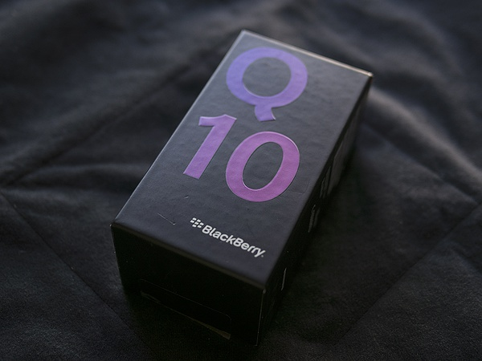

一次离别
秋意浓,离人心上秋意浓。 秋天，离别。在豆瓣厂工作已经快3年年了，虽然时间并不算特别长，但是离开的时候却是依依不舍。 上午提交完 Xbox One 和 windows phone 的代码，就等着办离职手续了。 记得12年面试豆瓣的时候，老耿问我做过最 cool 的事情是什么，现在看来就是做豆瓣FM了。 谢谢克军带我进豆瓣，记得给大四出来找工作的时候也是克军面试的我，真是幸运有业界大牛带着入行。 入职的时候分别见到了豆厂HR的各大美女，Ruby姐姐， Miya姐姐，...阅读更多
秋意浓,离人心上秋意浓。 秋天，离别。在豆瓣厂工作已经快3年年了，虽然时间并不算特别长，但是离开的时候却是依依不舍。 上午提交完 Xbox One 和 windows phone 的代码，就等着办离职手续了。 记得12年面试豆瓣的时候，老耿问我做过最 cool 的事情是什么，现在看来就是做豆瓣FM了。 谢谢克军带我进豆瓣，记得给大四出来找工作的时候也是克军面试的我，真是幸运有业界大牛带着入行。 入职的时候分别见到了豆厂HR的各大美女，Ruby姐姐， Miya姐姐，...阅读更多

作为资深的伪BBer，我对黑莓的爱好仅仅体现在其外观的优美上，尤其是黑莓手机的全键盘真是让人流连忘返的美。而黑莓系统的安全和优雅一直没有深入体验过。 按耐不住内心的煎熬，做了很久的惨无人道的纠结之后终于入手了第一台黑莓手机 —— blackberry Q10。 Q10是黑莓在OS 10.1上开发的第一款全键盘手机，黑莓手机怎么可以没有全键盘呢？所以妥妥儿忽略掉了之前上市的Z10这样的无键盘黑莓而选择了Q10。从大体上看Q10在硬件上延续了纯正的黑莓血统，配上OS 10.1顺滑流畅的系统，个人觉得这是一款专为黑莓全键盘爱好者量身打造全键盘手机。 Q10采用3.1寸的屏幕，分辨率为 720 x 720，PPI达到了330。Super...阅读更多
鸡兔同笼问题是一类中国古代著名的算术问题。最早出现在南北朝时期的算书《孙子算经》（以下称作算经）下卷当中： 今有雉、兔同笼，上有三十五头，下九十四足。问雉、兔各几何？ 翻译现代汉语： 现在有鸡和兔子在同一个笼子里。从上面数一共有三十五个头，从下面数一共有九十四只脚，问一共有多少只鸡、多少只兔子？ 从题干分析，这是一次方程组问题。算经中解法如下： 上置三十五头，下置九十四足。半其足，得四十七。以少减多。 从这里可以看出，...阅读更多